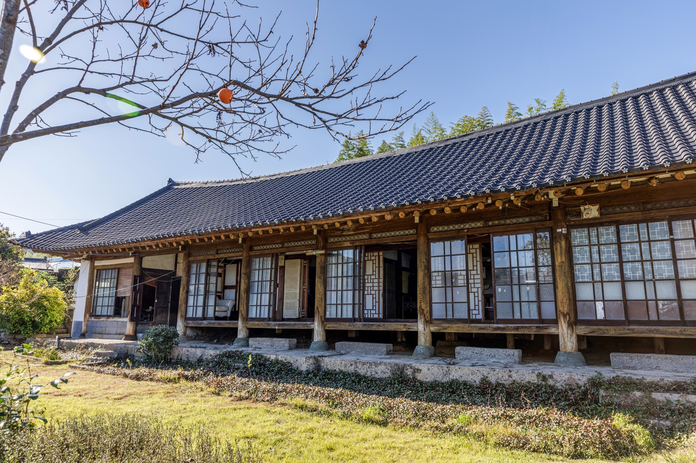

3천 석은 어디로 갔을까 — 기록이 말하는 것과 말하지 않는 것
함평 이동범가, 128년의 인연 | 제10편
지난 9편에서는 오래된 지적원도에서 증조부 춘강 이재승 선생의 이름을 찾아보았습니다. 땅에 남은 이름을 따라가다 보니 자연스럽게 다음 질문이 따라왔습니다. 그 많던 땅과 재산은 다 어디로 갔을까 하는 질문입니다.
이번 편은 답을 내리는 글이 아니라 질문을 정리하는 글입니다. 기록이 말해 주는 것과 아직 말해 주지 않는 것을 나누어, 저희 집안의 재산이 지나온 길을 조심스럽게 짚어 보려 합니다.
1. ‘3천 석’이라는 말
5편에서 소개했듯, 2003년 이재혁 가옥 조사보고서는 고조부 석암 이동범 선생을 3천 석의 부호로 알려진 인물로 적고 있습니다. 집안 어른들에게서도 비슷한 이야기를 들으며 자랐습니다.
다만 이 숫자는 후대의 기록과 전승에 남은 표현입니다. 당시의 장부나 문서로 3천 석이라는 규모가 확인된 것은 아니어서, 저희는 이 말을 그 시절 집안의 형편을 짐작하게 하는 단서 정도로 받아들이고 있습니다.

2. 1909년, 의병의 전령
그 시절 이동범가가 거액의 군수금 요구 대상으로 지목되었음을 보여 주는 기록이 있습니다. 1909년 8월 3일, 나주경찰서장이 대한제국 내부 경무국장에게 올린 비밀 보고입니다. 국사편찬위원회가 펴낸 『한국독립운동사자료』 의병편에 실려 있습니다.
보고에 따르면 1909년 7월 30일, 의병장 명의의 군수금 요구서가 함평 읍내의 ‘이만경(李萬頃)’에게 전달되었다고 합니다. 보고문에는 ‘李萬頃’과 ‘李東範’이 함께 적혀 있어, 만경군수를 지낸 이동범 선생과 연결되는 기록임을 알 수 있습니다. 함께 실린 전령에는 “咸平郡內 李萬頃宅 軍需金 一萬圓 從速來納于軍中事”라고 적혀 있습니다. 이만경 댁에 군수금 1만 원을 속히 납부하라는 요구입니다.
1만 원은 당시로서는 매우 큰돈이었습니다. 같은 해 11월 영업을 시작한 (구)한국은행의 총자본금은 1천만 원으로, 요구액 1만 원은 그 천분의 일에 해당합니다. 이처럼 거액을 요구받을 대상으로 이동범가가 지목되었다는 점은 의미가 있지만, 요구액만으로 실제 보유 재산이나 당시 집안에 대한 지역사회의 평가까지 확정할 수는 없습니다.
다만 이 기록이 증명하는 것은 ‘요구가 있었다’는 사실까지입니다. 고조부가 실제로 돈을 냈는지, 냈다면 얼마를 냈는지는 지금까지 찾은 자료로는 확인되지 않습니다. 그래서 저희는 이 기록을 재산이 의병에게 흘러갔다는 증거로 읽지 않고, 후속 기록을 찾아야 할 출발점으로 남겨 둡니다.
한편 2018년에 나온 『백범의 길』에는 함평문화원장을 지낸 이현석 선생이 고조부를 두고, 직접 독립운동을 하지는 않았지만 독립군의 왕래가 있었고 “음으로 양으로 독립자금을 기부”했다고 설명했다는 대목이 실려 있습니다. 저자가 인터넷에서 본 설명을 옮긴 것이고, 1909년의 요구와 같은 일인지도 알 수 없습니다. 경찰 기록이 남긴 ‘요구’와 후대에 전해진 ‘증언’ 사이를 이어 줄 기록은 아직 찾지 못했습니다.
3. 땅에 남은 이름들
9편에서 소개한 기각리 원도에는 증조부 이재승 선생의 이름이 적혀 있었습니다. 원도 한 장으로 집안 땅의 전체 규모나 소유관계의 변화를 알 수는 없지만, 기각리 제9호 원도에 이재승 선생의 이름이 남아 있다는 사실은 확인할 수 있습니다.
집안에는 함평뿐 아니라 무안에도 땅이 있었다는 이야기가 전합니다. 이 이야기 역시 아직 원자료로 확인하지 못한 가족 전승으로, 앞으로 찾아볼 과제입니다.
4. 공출, 농지개혁, 그리고 전쟁
7편에서는 1940년대 초 공출을 피해 헛간에 쌀을 숨겼다가 할아버지가 경찰서에 끌려갔던 이야기를 이학 여사의 회고록으로 소개했습니다. 이학 여사의 회고록은 당시 이동범가가 공출의 압박을 겪었다고 전합니다.
광복 뒤에는 더 큰 변화가 찾아왔습니다. 1949년 농지개혁법이 제정되어 이듬해부터 시행되면서, 지주가 가질 수 있는 농지에 상한이 생기고 나머지 땅은 정부가 사들여 농민에게 나누어 주었습니다. 매수 대상 농지의 지주에게는 보상액을 표시한 지가증권이 발급되었고, 보상액은 수년에 걸쳐 나누어 지급하도록 정해졌습니다.
그리고 곧바로 한국전쟁이 일어났습니다. 전쟁 중의 혼란과 물가 폭등 속에서 지가증권의 가치는 크게 떨어졌고, 이 시기에 적지 않은 지주 집안이 형편을 잃었다고 역사는 전합니다.
2018년의 『백범의 길』도 고조부를 ‘삼천 석의 부호’로 소개하며, 해방 뒤 토지개혁과 여순사건, 한국전쟁을 거치면서 대지주로서의 맥이 끊겼다고 적고 있습니다. 다만 이 서술만으로 실제 재산 감소의 시기와 원인이 입증되는 것은 아닙니다. 같은 책의 ‘8대에 걸쳐 부귀영화를 누려 온 명문’이라는 표현도 아직 다른 기록으로 확인하지 못해, 추가 검증이 필요한 부분으로 남겨 둡니다.
저희 집안에서도 재산이 크게 줄어든 시기를 농지개혁과 전쟁 무렵으로 짐작하고 있습니다. 다만 이는 가족의 짐작이고, 저희 집 땅이 실제로 언제, 얼마나, 어떤 경위로 넘어갔는지는 아직 기록으로 확인하지 못했습니다.
5. 우리가 아직 모르는 것
정리하면서 앞으로 찾아야 할 기록이 분명해졌습니다. 1909년 군수금 요구 이후의 경찰 기록, 1910~1930년대 상속과 매매에 따른 토지의 변동, 농지개혁 당시의 분배·보상 기록, 그리고 무안 땅에 관한 원자료입니다.
재산의 행방을 묻는 일도, 기록으로 확인되는 데까지만 따라가 보려 합니다.
다음 글에서는 잠시 숨을 고르며 열 편의 연재를 정리하고, 앞으로의 계획을 말씀드리겠습니다.
백범김구기념관 공식 인터뷰
https://www.youtube.com/watch?v=a9RnCcFLhq8
함께 보기
- 전체 기록 아카이브 https://lsaru23-ai.github.io/hp-db-archive/
- X @hp_db_archive https://x.com/hp_db_archive
- Threads @hp_db_archive https://www.threads.com/@hp_db_archive
지난 글
- 제1편: ‘이 진사’는 누구였나 — 백범 김구와 함평 이동범가
- 제2편: 보름을 머문 이유 — 1898년, 함평의 은신
- 제3편: 1946년 재회와 光明 — 김구가 다시 찾은 인연
- 제4편: 종가와 이재혁 가옥 — 두 집에 남은 128년
- 제5편: 석암 이동범 — ‘이 진사’의 생애
- 제6편: 춘강 이재승 — 종가를 이은 장남
- 제7편: 이상래 — 「光明」에 이름이 남은 손자
- 제8편: 신문란 — 1930년 무렵, 학교를 떠난 며느리
- 제9편: 지도에 남은 이름 — 기각리 원도 속 ‘李載昇’
주요 참고자료
[1] 「羅警秘收 第六九八號의一」(나주경찰서장 → 내부 경무국장, 1909. 8. 3), 국사편찬위원회, 『한국독립운동사자료』 의병편 Ⅷ, 한국 근대 사료 DB. https://db.history.go.kr/modern/level.do?levelId=kd_015_0010_0140_0080
[2] 박강철·김지민·천득염·김희태, 「함평 이재혁 가옥 조사보고서」, 2003. 12. 23.
[3] 「咸平郡咸平面箕閣里原圖 二十二枚之內 第九號」, 지적원도 사본.
[4] 이학(李鶴), 『황진이가 되고 싶었던 여인』, 범우사, 2001, 90~91쪽.
[5] 한국은행 디지털아카이브, 「(구)한국은행 약사」.
[6] (사)백범김구선생기념사업협회 기획, 『백범의 길 — 조국산하를 걷다』(강원·충청·전라·경상편), 아르테, 2018, 192쪽.
이 글은 문헌에서 직접 확인되는 사실과 집안의 전승·짐작을 구분해 작성했습니다. 1909년 기록은 군수금 ‘요구’를 보여 줄 뿐 실제 지급을 증명하지 않으며, 추가 사료에 따라 보완할 예정입니다.